Bộ nước bằng shader — trong trận
Chụp từ tour Unity (khung ~0,1 s). Shader PokiClash/UIWaterFx: lam nhạt + bọt trắng, khối cel, mép lam sâu, tan theo ngưỡng × mặt nạ mềm.
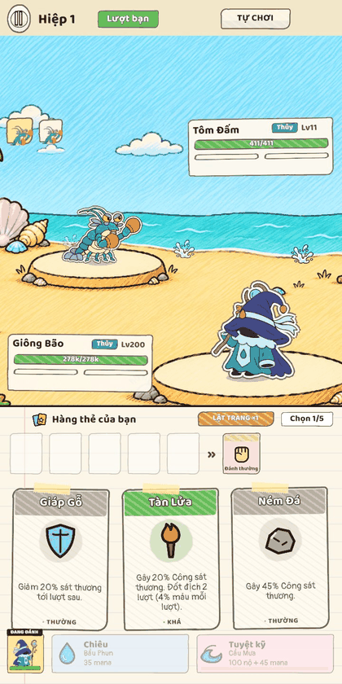
Giông Bão · dạng 1 · Đòn thường 17 khung
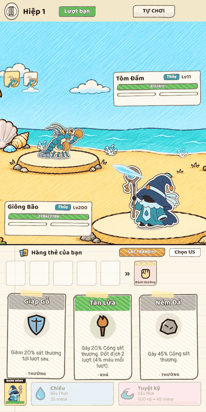
Giông Bão · dạng 1 · Chiêu cuối 36 khung
Giông Bão · dạng 2 · Đòn thường 17 khung
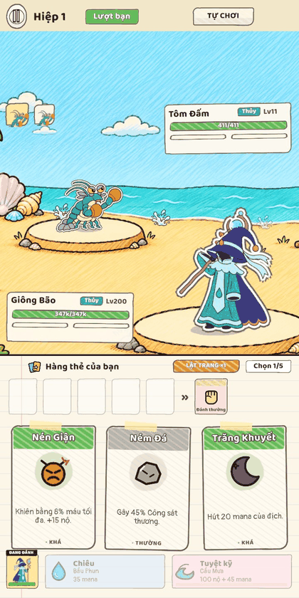
Giông Bão · dạng 2 · Chiêu mana 25 khung
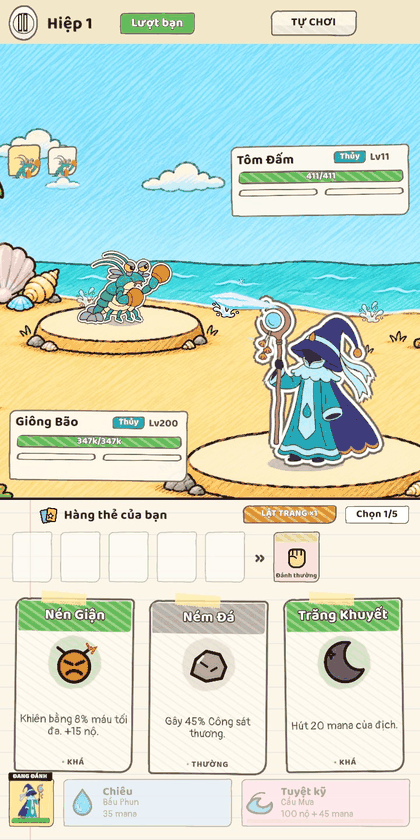
Giông Bão · dạng 2 · Chiêu cuối 36 khung
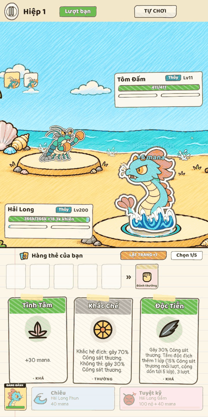
Hải Long · dạng 1 · Chiêu cuối 36 khung
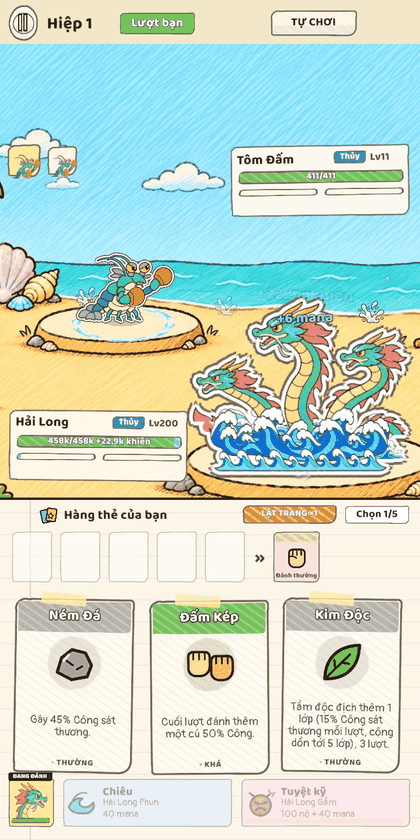
Hải Long · dạng 2 · Chiêu cuối 36 khung
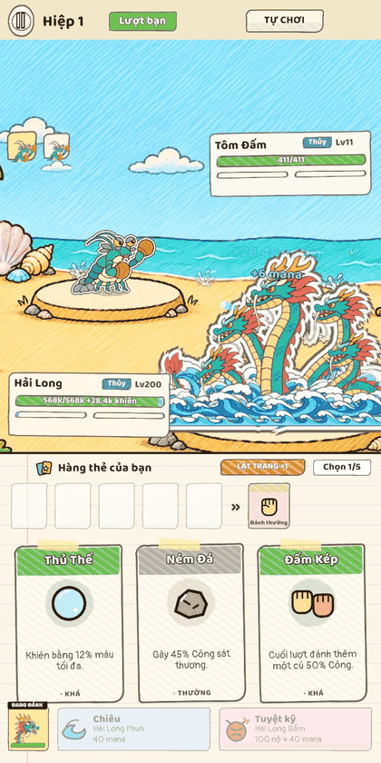
Hải Long · dạng 3 · Chiêu mana 25 khung
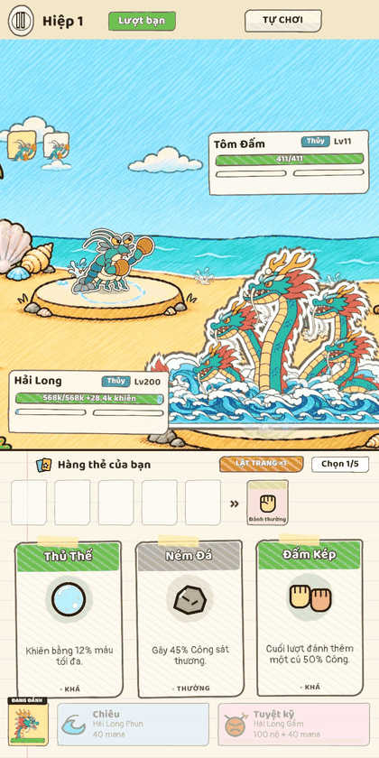
Hải Long · dạng 3 · Chiêu cuối 36 khung
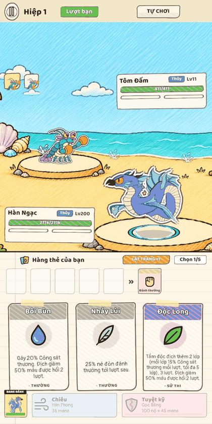
Hàn Ngạc · dạng 1 · Chiêu cuối 36 khung
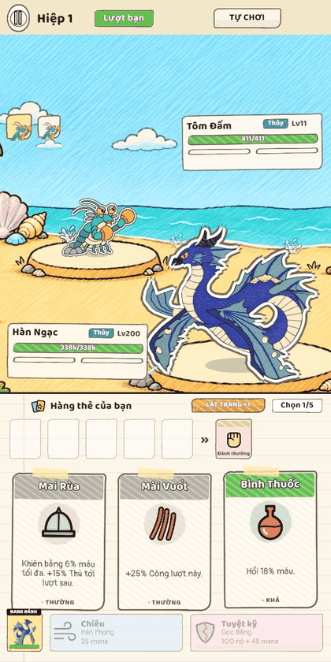
Hàn Ngạc · dạng 2 · Chiêu mana 25 khung
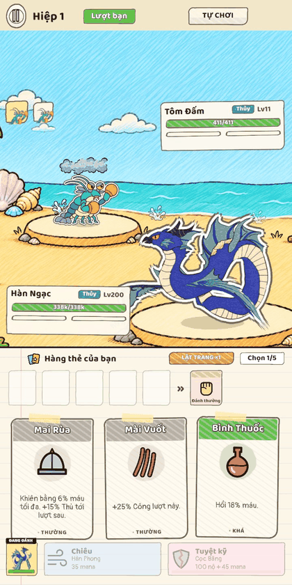
Hàn Ngạc · dạng 2 · Chiêu cuối 36 khung
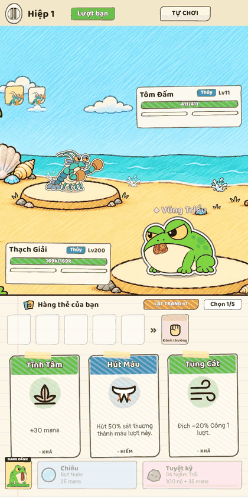
Thạch Giải · dạng 1 · Chiêu cuối 36 khung
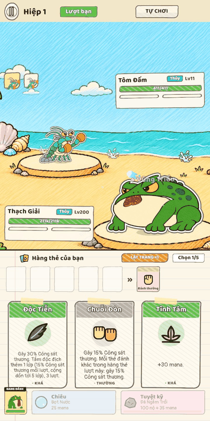
Thạch Giải · dạng 2 · Chiêu mana 24 khung
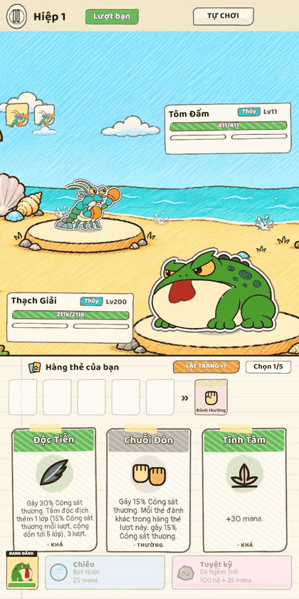
Thạch Giải · dạng 2 · Chiêu cuối 36 khung
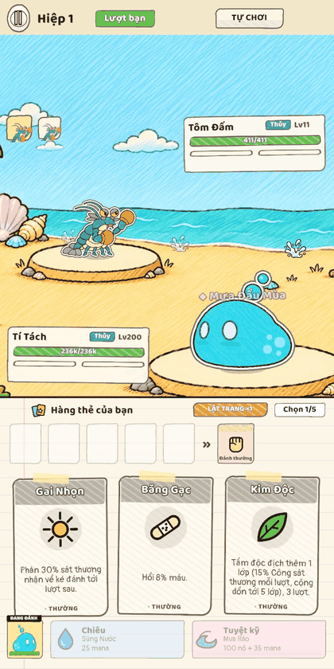
Tí Tách · dạng 1 · Chiêu cuối 36 khung
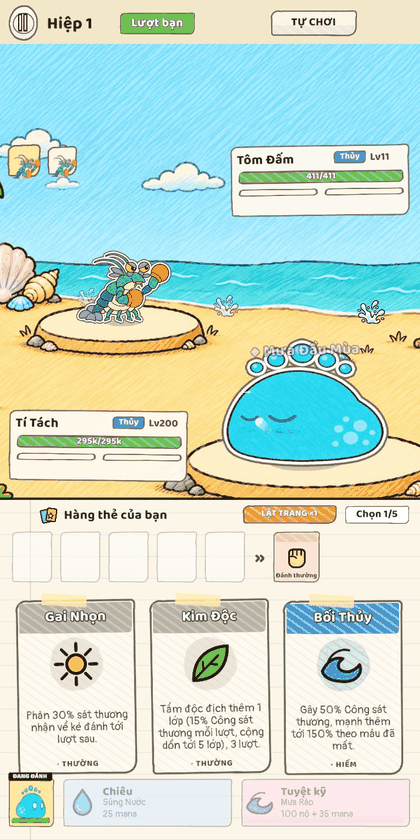
Tí Tách · dạng 2 · Chiêu mana 25 khung
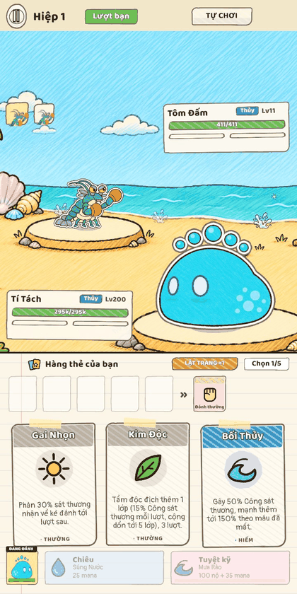
Tí Tách · dạng 2 · Chiêu cuối 36 khung